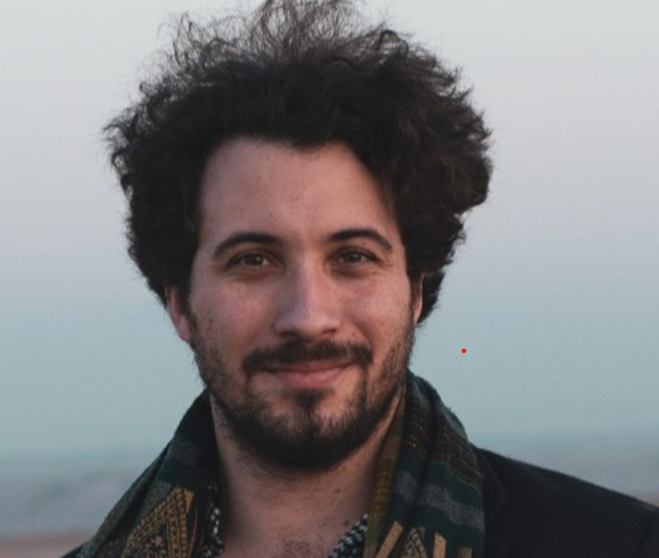

William Denault

I am a group leader in Bayesian machine learning and high-dimensional statistics at the Oslo Centre for Biostatistics and Epidemiology, Oslo University Hospital.
Previously, I was a Schmidt Fellow in AI in Natural Sciences at the University of Chicago, where I worked with Matthew Stephens.
I completed my PhD at the University of Bergen and the Centre for Fertility and Health at the Norwegian Institute of Public Health, advised by Astanand Jugessur and Håkon K. Gjessing.
Research
I develop and apply statistical methods for large and complex biomedical datasets. My current work focuses on empirical Bayes methods, Bayesian machine learning, high-dimensional statistics, and statistical genetics.
I am particularly interested in structured factor models, variable selection, functional responses, and error-in-variables problems with correlated high-dimensional data.
Research interests
- Empirical Bayes methods
- Bayesian machine learning
- High-dimensional statistics
- Statistical genetics
- Structured factor models
Contact
- Email: williade@uio.no
- GitHub: william-denault
- Google Scholar
- Curriculum vitae